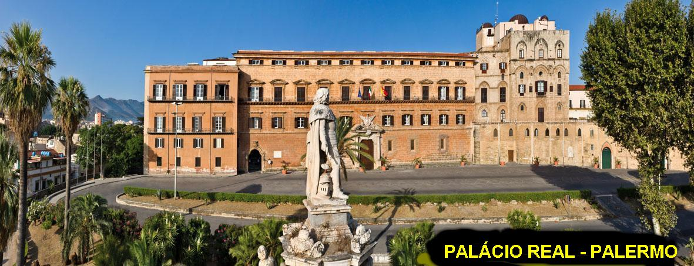
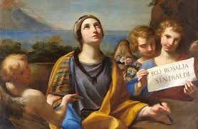
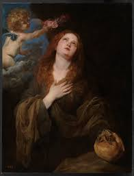

"CONVITE DA SANTÍSSIMA"
"VIRGEM MARIA"

NASCIMENTO E VIDA NO PALÁCIO
Rosália nasceu no ano 1125, em Palermo, Condado da Sicília, Itália. Era filha do Senhor Sinibaldo, Conde de Quisquina e Monte Rosa [atual território de Santa Stefano Quisquina e Bivona (Sicilia)]. Sua mãe era a Senhora Maria Guiscarda, que pertencia à nobreza italiana, pois era sobrinha do Rei normando Rogério II, descendente da família de Carlos Magno. Por essa razão, Rosália nasceu e cresceu vivendo num ambiente de muita riqueza na corte Siciliana, que era formada por famílias nobres muito importantes e com destaques na Europa. Em consequência, atingindo a adolescência se tornou membro da Corte, como Dama de Honra da Rainha Margarida de Navarra, que era esposa do Rei Rogério II da Sicília. A Rainha logo simpatizou com ela e com muito prazer colocou-a como Dama de sua companhia, pois era uma jovem amável e muito respeitosa e que sabia cultivar amizades.
Entretanto, com o passar dos anos, Rosália começou a sentir que aquele ambiente luminoso e risonho da Corte não lhe atraia como desejava e não lhe satisfazia intimamente. Pois desde tenra idade ela gostava e cultivava o hábito de rezar; ajoelhava no piso de seu quarto diante de uma bonita imagem de JESUS Crucificado, e deixava o seu pensamento romper a distancia até o Céu, carinhosamente imaginando estar na presença de JESUS e da SANTÍSSIMA VIRGEM MARIA. Era momentos de intensa alegria, que a levava sentir um imenso fogo interior que envolvia os seus sentimentos e direcionava a sua vontade para uma vocação sagrada, longe dos sorrisos e da badalação da Corte Siciliana. Os acontecimentos e os fatos dos seus dias na Corte não correspondiam a sua vontade e a sua vocação, embora os realizasse com amor, atenção e paciência, cumprindo dignamente o seu dever como Dama da Corte. De longa data ela adorava o SENHOR DEUS, e seu maior desejo era poder servir e amá-LO muito mais, com maior dedicação e fervor. Sonhava e idealizava esta possibilidade de demonstrar o seu amor e seus carinhos ao DEUS da Vida, que lhe permitiu nascer, ensejando-lhe a oportunidade de no fim da sua existência terrestre, alcançar a alegria maior de viver na eternidade junto DELE.
Os meses passavam e esta verdade se consolidava cada vez mais em sua alma.
Já crescidinha menina moça com 14 anos de idade, sua beleza pessoal realçava e iluminava a sua presença na Corte. Esta realidade, unida a magnífica posição social dos seus pais, tornou-se um atrativo maior, incandescendo muitas mentes e corações de jovens, que logo despertaram olhares bastante interessados nela, embora Rosália não se preocupasse com os seus bens, com os trajes, com sua beleza, e nem com os jovens interesseiros que se aproximavam. Entretanto, seus pais observando aquela movimentação, sentiram que já era o tempo oportuno de preparar a filha para um possível casamento. E por isso, na sequência dos dias, aconteceram os diálogos paternos e maternos, objetivando convencê-la a concordar com um dos pretendentes que era da escolha de seus pais. Ela, porém, respeitosamente e com humildade, ouvia todos os conselhos e ponderações dos pais, mas não dialogava, preferia abaixar o olhar e se manter em silêncio, porque na verdade ela também tinha os seus planos que se direcionavam num objetivo maior: “sonhava e só pensava em amar JESUS”.
DECIDIU FUGIR PARA VIVER SUA VIDA
Certo dia em que terminara de rezar se aproximou da janela do quarto, e teve uma magnífica surpresa, uma maravilhosa visão da SANTÍSSIMA VIRGEM MARIA. NOSSA SENHORA como sempre muito linda sorriu para ela e lhe perguntou: “Rosália querida, você gostaria de abandonar os prazeres e as alegrias do mundo, para viver ainda na Terra, as alegrias e os prazeres do Céu?”
Rosália sorrindo
emocionada e muito feliz só conseguiu falar:
- “Sim QUERIDA MÃE, eu quero. Desejo muito permanecer sempre e sempre, junto da SENHORA e de JESUS”...
Nossa MÃE SANTÍSSIMA alegre e sorridente, da mesma maneira silenciosa que havia chegado, despediu-se e voltou para o Céu.
Emocionada e repleta de ansiedade, Rosália preparou as coisas no seu quarto e no dia seguinte bem cedo, levando apenas um Livro de Orações e um Crucifixo, saiu de casa bem ligeiro em direção as montanhas. A Tradição confirma que Rosália logo que saiu da casa dos seus pais, foi recebida e acompanhada por dois Anjos que a protegeram e lhe indicaram a Gruta no Monte Quisquina, aproximadamente a 60 quilômetros de Palermo. A gruta estava na base de uma imensa pedreira, e sua formação rochosa oferecia uma abertura na entrada em forma triangular, com o vértice para cima. Os Anjos entraram, ajeitaram o local e colocaram uma imensa pedra na entrada, deixando apenas uma pequena abertura que só permitia o acesso ao interior, rastejando pelo chão. Interiormente a Gruta possuía diversos compartimentos (pequenas praças), ligados por estreitas passagens. Era escura e úmida, em consequência da água que gotejava de cima. Num canto, próximo a entrada, ainda hoje se observa uma pequena fonte, oriunda da água que brota nas paredes, onde ela cavou para beber. E nesta Gruta solitária, cercada por densa vegetação exterior, Rosália viveu isolada da civilização, rezando e jejuando, em companhia de DEUS e servida pelos Anjos.
O QUE OS HAGIÓGRAFOS ESCREVERAM
O que se passou nos longos anos em que a solitária eremita viveu na Gruta, foi motivo de muitas pesquisas e de buscas da verdade, que os hagiógrafos contemporâneos descrevem com seriedade e respeito. E justamente buscando a verdade se manifestaram assim:
“Rosália permaneceu imersa em contínua oração, padecendo como toda humanidade, as investidas e tramas do inimigo de todos nós (satanás) que queria desviá-la de seu Santo propósito. Mas o maligno foi continuamente vencido pela perseverança e coragem da jovem. E como consolo sublime e maior, ali também recebeu as visitas e as comunicações dos Anjos, que lhe manifestavam a Vontade Divina e lhe premiava a heroicidade do seu impressionante propósito.”
A VERDADE COMEÇOU A APARECER
Na sequência dos anos os pais de Rosália nunca tiveram noticias dela. Os acontecimentos de sua vida e sua história permaneceram ocultos e se mantiveram no esquecimento. Todavia, em diversas regiões da Itália passou a circular alguns boatos de que Rosália era uma Santa e que conseguia de DEUS muitos milagres, para as pessoas que rezavam e pediam a sua intercessão. Inclusive era voz corrente, que uma senhora de Palermo com sérios problemas de saúde acreditou nos boatos e rezou intensamente suplicando o auxílio da Santa junto de NOSSO SENHOR. DEUS misericórdia infinita recebeu e aceitou aquelas orações, e permitiu que acontecesse o milagre desejado, e a senhora doente ficou totalmente curada dos seus males pela intercessão de Rosália. Os meses passavam.

